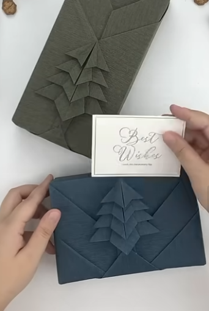

Gift wrapping for everyone
In this festive season, a Christmas tree, flower arrangements and festive decorations brighten up and lifts the ambiance during the darkest winter month. Crafting with friends, family and even Santa’s little helpers is a great community activity.
Why not help Santa with some gift wrapping? While Santa is trying out his new Santa Claus suit for adults of 149 cm or below, this simple 30 step Japanese gift wrapping method does not use any tape or adhesive. Unbelievably easy and so much fun for the entire family to join.
You will need: Wrapping Paper, sharp scissors and bone folder preferably not ivory. Recommended gift box size: 15 x 10 x 4 cm.
Start by measuring out two full rotations of the longest side of the gift box on the far side of the wrapping paper. Cut the wrapping paper with a margin of 1.5 cm. Repeat the process on the long side of the box. Cut again with 1.5 cm margin. Place the gift box centred in the middle of the wrapping paper two finger margin to the left. Now with the bone folder, create 90oC sharp corners. This will create a snug box construction for the gift box itself. Wrap the excess paper diagonally towards the opposite corner. Repeat on all corners. Fold the diagonal wrapped corners upwards, use the bone folder to get crisp folds. Turn the gift box to a 30oC and start crimping the crisp folds. Tuck the folds exactly perpendicular towards the initial rotation from the first step. By lightly pulling on tucked folds, a layer of the decorated tree will appear. Repeat this step three more times, ensuring not to pull too hard. Unwrap the entire box to create a small lip under the initial first fold to which all the tree layers will be tucked in to. The outline of the wrapping is now completed. Reassemble the wrapping from step one, repeated with a second layer of wrapping paper to create a thicker appearance. Now you have a simple but sturdy wrapped Christmas present, a perfect fit for a small Santa Claus suit.
Complete the holiday vibe! Before you finish wrapping, make sure you're ready for the big night. Go to our main page to pick out your favorite Santa costume.